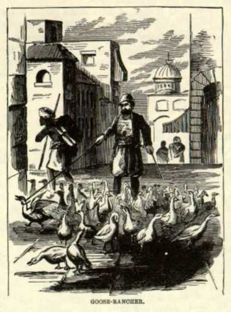

 ConstantinopleAshore, it was -- well, it was an eternal circus. People were thicker than bees, in those narrow streets, and the men were dressed in all the outrageous, outlandish, idolatrous, extravagant, thunder-and-lightning costumes that ever a tailor with the delirium tremens and seven devils could conceive of. There was no freak in dress too crazy to be indulged in; no absurdity too absurd to be tolerated; no frenzy in ragged diabolism too fantastic to be attempted. No two men were dressed alike. It was a wild masquerade of all imaginable costumes -- every struggling throng in every street was a dissolving view of stunning contrasts. Some patriarchs wore awful turbans, but the grand mass of the infidel horde wore the fiery red skull-cap they call a fez. All the remainder of the raiment they indulged in was utterly indescribable. The shops here are mere coops, mere boxes, bath-rooms, closets -- any thing you please to call them -- on the first floor. The Turks sit cross-legged in them, and work and trade and smoke long pipes, and smell like -- like Turks. That covers the ground. Crowding the narrow streets in front of them are beggars, who beg forever, yet never collect any thing; and wonderful cripples, distorted out of all semblance of humanity, almost; vagabonds driving laden asses; porters carrying drygoods boxes as large as cottages on their backs; peddlers of grapes, hot corn, pumpkin seeds, and a hundred other things, yelling like fiends; and sleeping happily, comfortably, serenely, among the hurrying feet, are the famed dogs of Constantinople; drifting noiselessly about are squads of Turkish women, draped from chin to feet in flowing robes, and with snowy veils bound about their heads, that disclose only the eyes and a vague, shadowy notion of their features. Seen moving about, far away in the dim, arched aisles of the Great Bazaar, they look as the shrouded dead must have looked when they walked forth from their graves amid the storms and thunders and earthquakes that burst upon Calvary that awful night of the Crucifixion. A street in Constantinople is a picture which one ought to see once -- not oftener. |